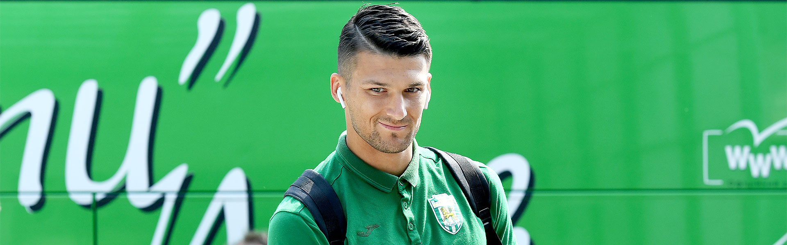

АДІ МЕГРЕМІЧ: «ВІРЮ, ЩО «КАРПАТИ» ЗМОЖУТЬ ЗДІЙСНИТИ МРІЮ ФАНАТІВ – КУБОК ЛЬВОВУ!»
Футболісти «Карпат» по-різному проводять відпустку: дехто вирушив у гори, а хтось відпочиває у теплих краях. Боснієць Аді Мегреміч полетів у Об'єднані Арабські Емірати, проте навіть там не забуває про футбол і знаходить час для інтерв’ю. У розмові з журналістом Інформаційного центру «Карпати» оборонець «зелено-білих» розповів про виступи «левів» у осінній частині УПЛ, процес адаптації у Львові та боротьбу за Кубок України.
– Аді, як оціниш першу частину сезону?
" – Безперечно, ми не можемо бути задоволеними результатами більшості матчів, що відбулися. «Карпати» не досягнули своєї проміжної цілі, не пішли на зимову паузу в топ-6. Однак ми продовжуємо зберігати шанси на потрапляння у верхню
частину турнірної таблиці, отже, ми боротимемося до кінця. У нас було справді кілька дуже хороших матчів. Крім того, у певних поєдинках нам не щастило, і ми пропускали на останніх хвилинах. Як на мене, пунктів 7-8 «Карпати» не дорахувалися."
– Кілька місяців тому ти став «левом». Чи задоволений періодом, який провів у Львові?
– Не можу сказати, що я щасливий, якщо брати до уваги результати. Однак все, що стосується клубу, команди, вболівальників і міста викликає у мене щире захоплення. Я настільки швидко тут адаптувався, що навіть не зіткнувся з труднощами.
Атмосфера в колективі, наші відносини – вони справді чудові. Це посприяло моїй швидкій адаптації в «Карпатах».
– Доводилося чути, як у команді тебе називають «брате». Як частіше до тебе звертаються: за іменем Аді чи все-таки «брате»?
– У боснійській мові «брате» – це звична практика і саме так часто звертаються один до одного друзі.
Знаю, що у вас є ще одне схоже слово - «брат» або ж поширене «бро». Тому в «Карпатах» хлопці використовують обидва варіанти (посміхається). Ми любимо веселитися і завжди зберігаємо хороші відносини в колективі.
– Свого часу ти розповідав, що доволі непогано розумієш українську. Навчив своїх карпатівських одноклубників рідній боснійській мові?
– Я покращив свої знання української. Можу сказати, що тепер я все розумію. Щодо боснійської,
то мої партнери знають кілька наших слів, але вони переважно лайливі (сміється). Крім того, старші хлопці, зокрема, Федецький та Голодюк, володіють англійською. В розмовах з рештою українців постійно використовую українську. Добре англійську
знають Папа та Понде. Наприклад, іспаномовні Ді Франко та Ербес також трохи володіють англійською і можуть комунікувати.
– Відомо, що ти сповідуєш мусульманство. Вже скоро світ відзначатиме не лише Різдво, а й Новий рік. Як плануєш провести свята?
– Я є мусульманином, проте у моїй сім’ї прихильно ставляться до усіх релігій. Родина мого батька
також сповідує мусульманство, а родичі матері є православними християнами. Тому ми святкуємо та поважаємо усі свята. Їх, а також Новий рік, я проведу у родинному колі в Сараєво.
– Ти колись розповідав, що твій батько був професійним футболістом і виступав у кількох провідних боснійських клубах, а потім грав у Німеччині. Також відомо, що мама була гандболісткою і викликалася до національної збірної країни. Здається, спортом також займається твоя сестра?
– У нас справді спортивна родина. Взагалі я є одинаком у сім’ї і не маю рідних братів та сестер. Зате донька моєї тітки грає у волейбол на професійному рівні за команду з другого дивізіону. Родичі навідували мене у Львові і їм тут дуже
сподобалося: місто, клуб і все, все, все.
– Так складалося, що у більшості своїх попередніх команд ти не затримувався на довго – практично всюди виступав по півсезону. Зараз маєш чудову нагоду зруйнувати цю традицію.
– Схоже на те. Я почуваюся комфортно і я думаю,
що ми з «Карпатами» можемо досягнути більшого, якщо враховувати рівень команди, яку ми маємо. Я справді щасливий у Львові.
– Одна з головних цілей «левів» у завершальній частині сезону – Кубок України. Навесні «зелено-білі» зіграють у чвертьфіналу турніру проти «Інгульця». Тобі відомо про мрію карпатівських фанатів у цьому турнірі?
– Так,
звичайно, я знаю всі факти про наш клуб, в тому числі і про кубкові сподівання. Я вірю, що ми зможемо зробити те, що від нас вимагають і здійснити мрію фанатів. Тому без вагань можу сказати: «Кубок Львову!»
Інформаційний центр ФК «Карпати»
Фото: © ФК «Карпати»
21 Грудня 2018